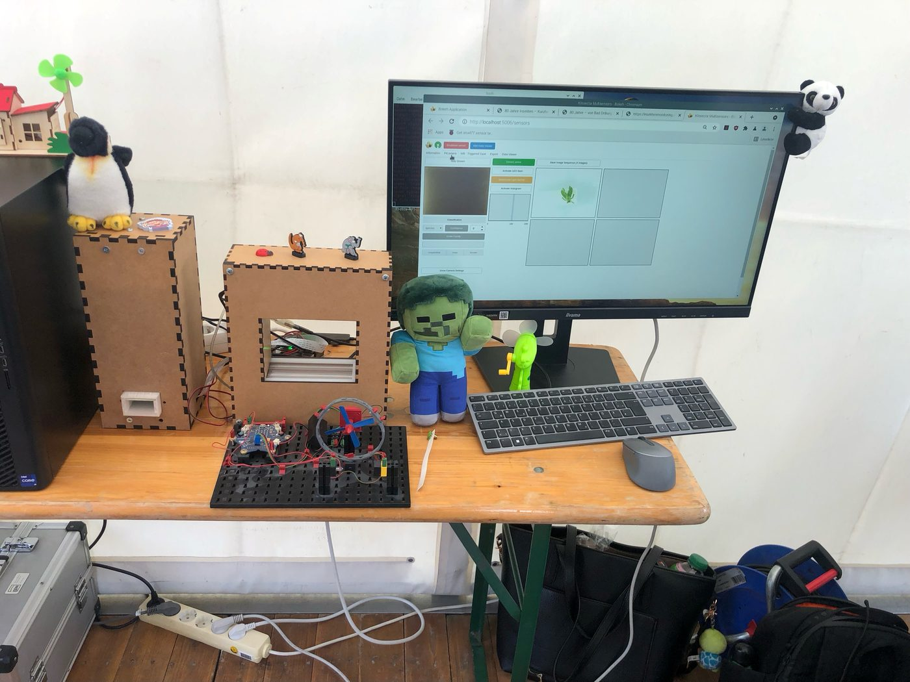
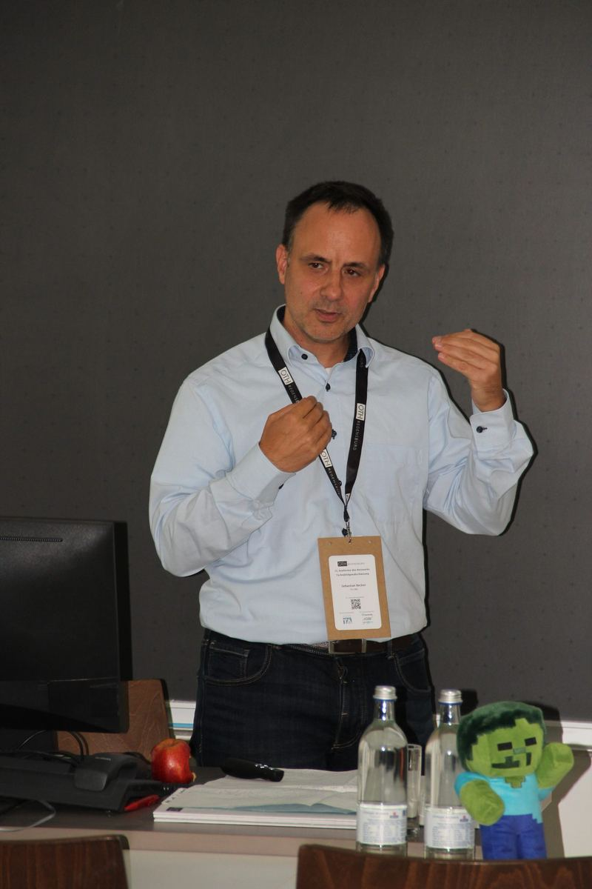
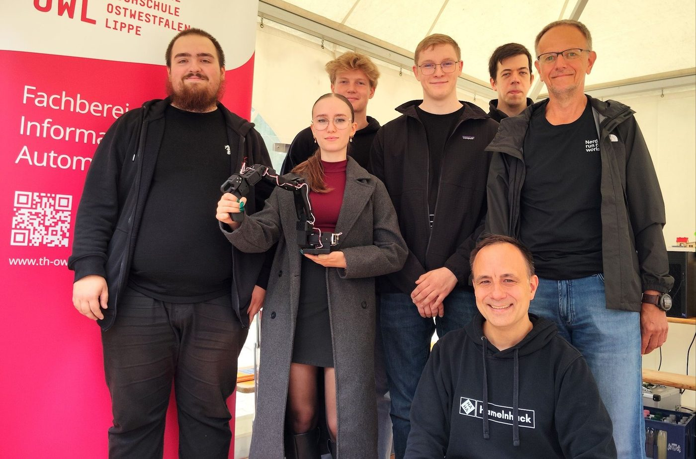

Objective
Robust Observation
Reliable recording and analysis rather than mere technology demonstration.
This project focuses on the automated identification of insects — and deliberately goes one step further: through unambiguous species determination, a foundation is to be created for researching and testing species-specific forms of communication. The goal is not only to recognize insects, but in the future to address them in a targeted way through a guidance system, respond to their presence, and convey specific "requests" or signals.
The innovation project SmInReSy combines insect monitoring, automated identification, and technical interaction. Further information on TH OWL's innovation projects can be found on the TRiNNOVATION – Innovation Projects (TH OWL) page.
Reliable recording and analysis rather than mere technology demonstration.
The setup is partly inspired by Max Sittinger's open-source approach and the KInsecta model.
Communication between animals and computers is to be researched.
The workflow is deliberately structured in modular building blocks, making it transparent how field work, data collection, and analysis come together into a robust monitoring pipeline.

Test setup: sensor housing, wingbeat sensor, and the analysis software used in the field.
The news section provides an overview of current developments in the project.

From 21 to 23 September 2026, I gave the opening talk of the session "Sensing as Governance Infrastructure: Consequences of AI-Based Environmental Monitoring" at the 12th International Conference of the Technology Assessment Network (NTA) at OTH Regensburg: "Wingbeat Sensing as Governance Infrastructure: How AI-Based Insect Monitoring Creates Evidence, Responsibilities, and Pressure to Act". The project SmInReSy was presented to an interdisciplinary audience from engineering, social sciences, and the humanities. "Besides the interdisciplinary exchange with other researchers, the insight into the perspectives of technology assessment was especially valuable to me. An all-round successful conference."

TH OWL was represented with its own stand at the Glasstadtfest in Bad Driburg under the motto "Day of Science". I gave information there on the decline of insects and the problems associated with it. Also present: Prof. Dr. Rainer Rasche and students who, among other things, demonstrated a leader/follower robotic arm. Report by Bad Driburg aktuell (photo: Bad Driburg aktuell).
Since July 2026, a cooperation exists with Brandstiftung. The foundation was established in autumn 2025 with the goal of providing new impetus for species conservation, environmental protection, and sustainable development. Prof. Johannes Üpping (TH OWL) is both a founding member of the foundation and now an active research partner of SmInReSy.
I have been invited to present my SIL concept as a poster at the ACI Conference (Animal-Computer Interaction) in December.
I was represented at the 1st International Day of Insects to exchange ideas with specialists and to meet again with the team around Dr. Reckhaus, who also run the "insect-respect" initiative.
The cooperation and institutional embedding are briefly explained here.
The Brandstiftung is an important project partner. Prof. Johannes Üpping accompanies the collaboration as a research partner.
The SmInReSy project combines monitoring, AI, open development, and real-world collaborations.
Get in touch here.
Email, Privacy Policy and Imprint.